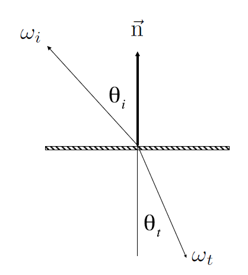
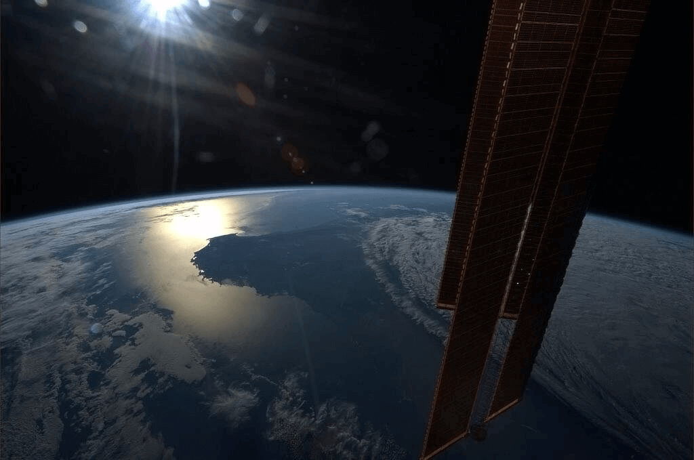
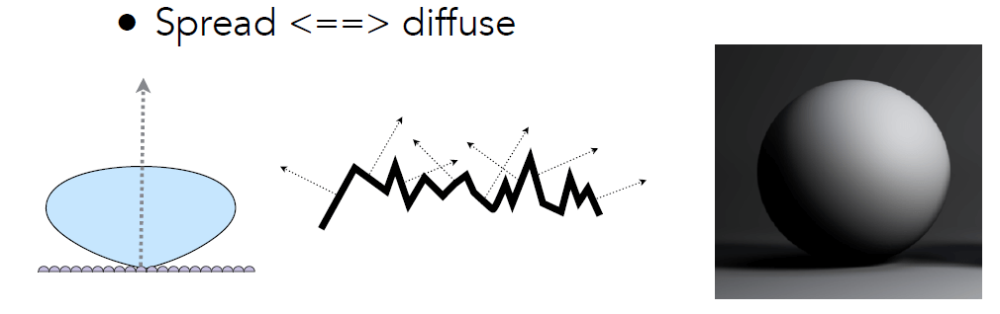

资源
课程
Lecture 17 Materials and Appearances
The Appearance of Natural Materials
天然材质的外观
大千世界，材质万千。
What is Material in Computer Graphics?
计算机图形学中的材质是什么？
Material == BRDF
BRDF 是双向反射分布函数（Bidirectional Reflectance Distribution Function）的缩写。它是描述表面材质如何反射入射光的函数。BRDF 定义了给定入射方向和出射方向下，单位入射光能量在各个出射方向上的分布。简单来说，BRDF 描述了光线与表面相互作用时光的反射特性。
What is this material?
Diffuse / Lambertian Material (BRDF)
漫反射/朗伯材质 (BRDF)
Light is equally reflected in each output direction
光线在每个输出方向上均等反射
Suppose the incident lighting is uniform:
假设入射光是均匀的：
——albedo 反照率 (color)
What is this material?
Glossy material (BRDF)
光泽材质（BRDF）

What is this material?
Ideal reflective / refractive material (BSDF)*
理想的反射/折射材料 (BSDF*)
Perfect Specular Reflection
完美的镜面反射（只有反射没有折射）
自上而下的视图（俯视表面）
Perfect Specular Reflection BRDF
完美镜面反射 BRDF
Specular Refraction
镜面折射
In addition to reflecting off surface, light may be transmitted through surface.
除了从表面反射外，光还可以穿过表面。
Light refracts when it enters a new medium.
光进入新介质时会发生折射。
Snell’ s Law
斯涅尔定律
Transmitted angle depends on
透射角取决于
index of refraction (IOR) for incident ray
入射光线的折射率 (IOR)
index of refraction (IOR) for exiting ray
出射光线的折射率 (IOR)
Law of Refraction
折射定律

Total internal reflection:
全内反射
When light is moving from a more optically dense medium to a less optically dense medium:
当光从光密度较大的介质移动到光密度较小的介质时：
求得
Light incident on boundary from large enough angle will not exit medium.
从足够大的角度入射到边界的光将不会离开介质。
Snell’ 's Window / Circle
Fresnel Reflection / Term
菲涅尔项
Reflectance depends on incident angle (and polarization of light)
反射率取决于入射角（和光的偏振）
This example: reflectance increases with grazing angle
本例：反射率随观察角增加（变亮了）
Fresnel Term（菲涅尔项）描述了光线与介质界面之间的反射和透射的比例。菲涅尔项是一个关于入射角度和折射率之间关系的函数，通常用来计算光线在介质表面的反射和透射的强度。
在计算菲涅尔项时，通常使用菲涅尔方程来描述入射光线在介质表面的反射和透射情况。菲涅尔方程包括两个方面：垂直极化和平行极化。垂直极化表示光的电场矢量垂直于入射平面，而平行极化表示电场矢量在入射平面内。
菲涅尔项的计算取决于入射角度、折射率以及光线的极化状态。在计算机图形学和光学模拟中，菲涅尔项通常被用于模拟材质的反射特性，以便更准确地模拟真实世界中的光线行为。
Fresnel Term (Dielectric, )
菲涅尔项（介电体，）
-
S 极化（也称为垂直极化）：在S极化状态下，入射光的电场矢量与入射平面垂直。当光线以 S 极化状态入射到介质表面时，其部分能量会被反射，而部分会被折射。S 极化通常与垂直于入射平面的反射和透射相关联。
-
P 极化（也称为平行极化）：在P极化状态下，入射光的电场矢量位于入射平面内。与 S 极化类似，当光线以 P 极化状态入射到介质表面时，也会发生一部分反射和一部分折射。P极化通常与入射平面内的反射和透射相关联。
-
“unpolarized”（非偏振）光是指入射光中电场矢量的方向没有特定的取向，而是随机分布的。这意味着它包含了各种极化状态的光，无法用 S 极化或 P 极化来描述。非偏振光通常是自然光或由光源发出的常见光线，其电场矢量在所有可能的方向上均匀分布。在介质表面反射时，非偏振光的极化状态可能会因反射而发生改变，产生 S 极化和 P 极化的组合。
与表面法线夹角越大，反射率越高。
Fresnel Term (Conductor)
菲涅尔项（导体）
Fresnel Term — Formulae
菲涅尔项 — 公式
Accurate: need to consider polarization
准确：需要考虑极化
Approximate: Schlick’ s approximation
近似：Schlick 近似
Microfacet Material
微面片材质

从太空中看地球，看不出山脉的粗糙，反而是一片光滑的感觉。
Microfacet Theory
微面理论
Rough surface
粗糙表面
-
Macroscale: flat & rough
宏观尺度：平坦且粗糙
-
Microscale: bumpy & specular
微观尺度：凹凸不平且镜面反射
Individual elements of surface act like mirrors
表面的各个元素就像镜子一样
-
Known as Microfacets
称为微面
-
Each microfacet has its own normal
每个微面都有自己的法线
Key: the distribution of microfacets’ normals
关键：微面元法线的分布
-
Concentrated <==> glossy
集中 <==> 光泽

-
Spread <==> diffuse
分散 <==> 漫射
Microfacet BRDF
-
What kind of microfacets reflect to ? (hint: microfacets are mirrors)
什么样的微表面能将 反射到 ？（提示：微表面是镜子）
- ：Fresnel term 菲涅尔项
- ：shadowing-masking term 遮蔽掩蔽项（微表面反射时被另一个微表面所阻挡）
- ：distribution of normals（法线的分布）
Isotropic / Anisotropic Materials (BRDFs)
各向同性/各向异性材料 (BRDF)
对不同方向光反射率不一样，称为各向异性材料（一般现实生活中，这种材料都是人造的）
-
Key: directionality of underlying surface
关键词：底层表面的方向性
Anisotropic BRDFs
各向异性 BRDF
Reflection depends on azimuthal angle
反射取决于方位角
Results from oriented microstructure of surface, e.g., brushed metal
来自表面定向微结构的结果，例如拉丝金属
这玩意摸一摸还能改变它的纹路。
Properties of BRDFs
BRDF 的性质
-
Non-negativity
非负性
-
Linearity
线性叠加
-
Reciprocity principle
可逆性
-
Energy conservation
能量守恒
一部分能量被吸收，
- Isotropic vs. anisotropic
- If isotropic,
- Then, from reciprocity,
Measuring BRDFs
Measuring BRDFs: Motivation
测量 BRDF：动机
Avoid need to develop / derive models
- Automatically includes all of the scattering effects present
Can accurately render with real-world materials
- Useful for product design, special effects, …
Theory vs. practice:
Image-Based BRDF Measurement
基于图像的 BRDF 测量
光线照着物体，相机绕物体一周。
Measuring BRDFs: goniore flectometer
测量 BRDF：测角反射计
Measuring BRDFs
General approach:
一般的做法：
1 | |
Improving efficiency:
提高效率：
-
Isotropic surfaces reduce dimensionality from 4D to 3D
各向同性表面将维度从 4D 降低到 3D
-
Reciprocity reduces # of measurements by half
互易性将测量次数减少一半
-
Clever optical systems…
智能光学系统……
Challenges in Measuring BRDFs
-
Accurate measurements at grazing angles
以掠射角进行精确测量
-
Important due to Fresnel effects
由于菲涅尔效应而显得重要
-
Measuring with dense enough sampling to capture high frequency specularities
使用足够密集的采样进行测量以捕捉高频镜面反射
-
Retro-reflection
回射
-
Spatially-varying reflectance, …
空间变化的反射率，…
Representing Measured BRDFs
表示测量的 BRDF
Desirable qualities
理想品质
-
Compact representation
紧凑表示
-
Accurate representation of measured data
测量数据的准确表示
-
Efficient evaluation for arbitrary pairs of directions
对任意方向对的有效评估
-
Good distributions available for importance sampling
可用于重要性抽样的良好分布
Tabular Representation
表格表示
Store regularly-spaced samples in 将间隔均匀的样本存储在
-
Better: reparameterize angles to better match specularities
更好：重新参数化角度以更好地匹配镜面反射
Generally need to resample measured values to table
通常需要将测量值重新采样到表中
Very high storage requirements
存储要求非常高

- Software & Data Downloads — BRDF | Mitsubishi Electric Research Laboratories (merl.com) 这个论文收集了一堆 BRDF
Lecture 18 Advanced Topics in Rendering
Advanced Light Transport
- Unbiased light transport methods（无偏光线传输方法）：
- 这些方法旨在以最准确的方式模拟真实世界中光的行为，而不引入系统性的偏差。
- 无偏方法通常通过追踪光线的路径并对其进行积分来实现。典型的无偏方法包括路径追踪（Path Tracing）、光子映射（Photon Mapping）和Metropolis光线追踪（Metropolis Light Transport）等。
- 优点：可以获得高质量、逼真的图像，特别是对于复杂的光照和材质场景。
- 缺点：由于需要追踪大量的光线路径并进行复杂的积分计算，无偏方法通常具有较高的计算成本。
- Biased light transport methods（有偏光线传输方法）：
- 这些方法通过引入一定的偏差或近似，以减少计算成本并加快渲染速度。
- 有偏方法的设计目标是在保持图像质量的同时降低计算复杂度。
- 典型的有偏方法包括辐射传输（Radiosity）、双向路径追踪（Bidirectional Path Tracing）、重要性采样（Importance Sampling）等。
- 优点：通常比无偏方法更快速，尤其适用于实时渲染和交互式应用。
- 缺点：可能会引入一定程度的图像噪声或伪影，因为近似方法可能无法完全准确地模拟真实世界中的光传输。
总的来说，无偏光线传输方法追求最高的图像质量和真实性，但计算成本较高；而有偏光线传输方法则更注重在合理的计算复杂度下获得可接受的图像质量，适用于实时或大规模渲染场景。在实际应用中，通常会根据具体需求和性能要求选择适当的光线传输方法。
-
Unbiased light transport methods
无偏光传输方法
-
Bidirectional path tracing (BDPT)
双向路径追踪 (BDPT)
-
Metropolis light transport (MLT)
Metropolis 光传输 (MLT)
-
-
Biased light transport methods
偏光传输方法
-
Photon mapping
光子映射
-
Vertex connection and merging (VCM)
顶点连接和合并 (VCM)
-
Instant radiosity (VPL / many light methods)
即时辐射度 (VPL / 多种光方法)
-
Biased vs. Unbiased Monte Carlo Estimators
-
An unbiased Monte Carlo technique does not have any systematic error
无偏蒙特卡罗技术没有任何系统误差
-
The expected value of an unbiased estimator will always be the correct value, no matter how many samples are used
无论使用多少样本，无偏估计量的预期值始终是正确的值
-
-
Otherwise, biased
否则，有偏差
-
One special case, the expected value converges to the correct value as infinite #samples are used — consistent
一种特殊情况，随着使用无限数量的样本，预期值会收敛到正确值
-
-
We’ ll look again at this page after introducing Photon Mapping
在介绍光子映射后，我们将再次查看此页面
Bidirectional Path Tracing (BDPT)
-
Recall: a path connects the camera and the light
回想一下：一条路径连接着相机和灯光
-
BDPT
-
Traces sub-paths from both the camera and the light
追踪来自相机和灯光的子路径
-
Connects the end points from both sub-paths
连接两个子路径的端点
-
BDPT 的基本思想是同时追踪从光源到摄像机的路径和从摄像机到场景中物体的路径，然后在这些路径上进行连接，以计算从光源到摄像机的光照传输。这种双向追踪方式为模拟复杂光照效果提供了更多的可能性。
- 从摄像机追踪路径：
- 从摄像机发射光线，追踪它们在场景中的路径。这种方法类似于传统路径追踪。
- 从光源追踪路径：
- 同时，从光源开始发射光线，追踪它们在场景中的传播。这种方法类似于光子映射等技术。
- 路径连接：
- 关键步骤是在摄像机路径和光源路径之间进行连接，形成一系列完整的路径。这些连接点的交汇位置和路径长短可以用来计算光照传输。
这是一个光路复杂的场景，主要光照都来自灯打到天花板后反射出来的光。
-
Suitable if the light transport is complex on the light’ s side
适用于光传输在光端复杂的情况下
-
Difficult to implement & quite slow
难以实现且速度较慢
Metropolis Light Transport (MLT)
MLT 基于马尔可夫链蒙特卡洛算法 (Markov Chain Monte Carlo, MCMC)。它通过在渲染过程中构建一系列状态（或称为路径）并使用概率转移来搜索光线路径空间，以寻找高质量的渲染解决方案。
- 状态空间构建：
- MLT 从初始状态（或路径）开始，通过一系列随机变化逐步构建状态空间。这些状态描述了光线在场景中的传播路径，包括从光源到摄像机的直接和间接光照。
- 概率转移：
- MLT 使用概率转移算法来在状态空间中搜索，以决定接受或拒绝新状态。这个过程涉及到一系列基于状态之间差异的概率计算，以及利用接受率来平衡探索和收敛性能。
- 样本累积：
- MLT 通过对多个状态进行采样并根据它们的贡献权重来累积样本，以生成最终的渲染图像。这样的采样过程能够有效地降低图像中的噪声，并提高渲染的质量。
-
A Markov Chain Monte Carlo (MCMC) application
马尔可夫链蒙特卡罗 (MCMC) 应用
-
Jumping from the current sample to the next with some PDF
使用一些 PDF 从当前样本跳转到下一个样本
-
-
Very good at locally exploring difficult light paths
非常擅长局部探索困难的光路
-
Key idea
关键思想
-
Locally perturb an existing path to get a new path
局部扰动现有路径以获得新路径
-
优点：
-
Works great with difficult light paths
适用于困难的光路
-
Also unbiased
也无偏差
缺点：
-
Difficult to estimate the convergence rate
难以估计收敛速度
-
Does not guarantee equal convergence rate per pixel
不能保证每个像素的收敛速度相等
-
So, usually produces “dirty” results
因此，通常会产生“脏”结果
-
Therefore, usually not used to render animations
因此，通常不用于渲染动画
Photon Mapping
光子映射
-
A biased approach & A two-stage method
有误差的方法和两阶段方法
-
Very good at handling Specular-Diffuse-Specular (SDS) paths and generating caustics
非常擅长处理镜面反射-漫反射-镜面反射 (SDS) 路径和生成焦散
Photon Mapping — Approach (variations apply)
光子映射——方法（适用变化）
Photon Mapping 主要分为两个阶段：光子发射和光子映射。
- 光子发射：
- 在这个阶段，光子从光源发射，并在场景中传播。这些光子以一定的概率与场景中的表面相交，并根据相交点的性质，如表面颜色、材质等，进行反射、折射或吸收。
- 光子映射：
- 在这个阶段，光子被映射到场景的光线路径上，并存储在特定的数据结构中，如光子图（photon map）。这个数据结构可以是基于光子碰撞点的空间分布，也可以是基于光子的能量和颜色等属性。
- 渲染：
- 在渲染阶段，相机射线从观察点出发，与场景中的表面相交。当相机射线与场景中的表面相交时，就可以使用光子图来估计光线的颜色和强度，从而计算出最终的图像颜色。
-
Stage 1 — photon tracing
第 1 阶段 — 光子追踪
-
Emitting photons from the light source, bouncing them around, then recording photons on diffuse surfaces
从光源发射光子，使其四处反射，然后在漫反射表面上记录光子
-
-
Stage 2 — photon collection (final gathering)
第 2 阶段 — 光子收集（最终聚集）
-
Shoot sub-paths from the camera, bouncing them around, until they hit diffuse surfaces
从相机中发射子路径，让它们四处弹跳，直到它们击中漫反射表面
-
Photon Mapping
-
Calculation — local density estimation
计算 — 局部密度估计
-
Idea: areas with more photons should be brighter
想法：光子较多的区域应该更亮
-
For each shading point, find the nearest N photons. Take the surface area they over
对于每个着色点，找到最近的 N 个光子。取它们覆盖的表面积
-
-
Why biased?
为什么有偏差？
-
Local Density estimation
局部密度估计
-
But in the sense of limit
但在极限意义上
-
More photons emitted ->
发射更多光子 ->
-
the same photons covers a smaller ->
相同的 个光子覆盖较小的 ->
-
is closer to
更接近
-
-
So, biased but consistent!
因此，有偏差但一致！
-
An easier understanding bias in rendering
更容易理解渲染中的偏差
-
Biased == blurry
偏差 == 模糊
-
Consistent == not blurry with infinite #samples
一致 == 无限 #samples 不模糊
-
-
Why not do a “const range” search for density estimation?
为什么不进行“常量范围”搜索以进行密度估计？
Vertex Connection and Merging
顶点连接与合并
-
A combination of BDPT and Photon Mapping
BDPT 和光子映射的结合
-
Key idea
关键思想
-
Let’ s not waste the sub-paths in BDPT if their end points cannot be connected but can be merged
如果 BDPT 中的子路径的端点无法连接但可以合并，那么就不要浪费它们
-
Use photon mapping to handle the merging of nearby “photons”
使用光子映射来处理附近“光子”的合并
-
Instant Radiosity (IR)
即时辐射 (IR)
-
Sometimes also called many-light approaches
有时也称为多光方法
-
Key idea
核心思想
-
Lit surfaces can be treated as light sources
光照表面可视为光源
-
-
Approach
方法
-
Shoot light sub-paths and assume the end point of each sub-path is a Virtual Point Light (VPL)
拍摄光子路径并假设每个子路径的终点是虚拟点光源 (VPL)
-
Render the scene as usual using these VPLs
使用这些 VPL 照常渲染场景
-
右图中，由于除以了一个极小的浮点数，导致边缘极亮。
-
Pros: fast and usually gives good results on diffuse scenes
优点：速度快，通常在漫反射场景中效果良好
-
Cons:
缺点
-
Spikes will emerge when VPLs are close to shading points
当 VPL 靠近着色点时会出现尖峰
-
Cannot handle glossy materials
无法处理光泽材质
-
Advanced Appearance Modeling
非表面模型是描述物体内部结构或几何形状的模型，不仅包括物体的外部表面，还包括内部的结构或体积。
-
Non-surface models
非表面模型
-
Participating media
参与介质
-
Hair / fur / fiber (BCSDF)
头发/毛皮/纤维 (BCSDF)
-
Granular material
颗粒材料
-
表面模型是描述物体外部表面的模型，通常由一系列的表面片段或曲面组成。
-
Surface models
表面模型
-
Translucent material (BSSRDF)
半透明材料 (BSSRDF)
-
Cloth
布料
-
Detailed material (non-statistical BRDF)
详细材料 (非统计 BRDF)
-
-
Procedural appearance
程序外观
Non-Surface Models
非表面模型
Participating Media
粒子媒介
非表面模型范例：Fog 和 Cloud。
-
At any point as light travels through a participating medium, it can be (partially) absorbed and scattered.
光在穿过参与介质的任何时刻都会被（部分）吸收和散射。
-
Use Phase Function to describe the angular distribution of light scattering at any point within participating media.
使用相位函数描述参与介质中任意点 的光散射的角度分布。
Participating Media: Rendering
-
Randomly choose a direction to bounce
随机选择一个方向进行反弹
-
Randomly choose a distance to go straight
随机选择一个距离进行直线运动
-
At each ‘shading point’, connect to the light
在每个“阴影点”处，连接到灯光
Participating Media: Application
Hair Appearance
毛发材质
Kajiya-Kay Model
Kajiya-Kay 模型是一种经典的计算机图形学模型，用于模拟光照在物体表面的反射和折射过程。这个模型由Jim Kajiya和Tim Kay在1989年提出，是计算机图形学中重要的全局照明模型之一。
Kajiya-Kay 模型的基本原理：
Kajiya-Kay 模型基于渲染方程（Rendering Equation），它描述了光照在场景中的传播和交互过程。这个方程表达了在某一点的表面上观察到的辐射强度与该点表面上各个方向上的入射光线、表面材质的反射性质和环境光之间的关系。
Kajiya-Kay 模型基于渲染方程，通过对方程中的光照传播和反射过程进行近似和简化，提供了一种实用的方法来计算逼真的图像。
Kajiya-Kay 模型的主要特点：
- 表面属性表示：模型考虑了表面的漫反射、镜面反射和折射等属性，能够模拟各种类型表面的光照行为。
- 局部光照模型：Kajiya-Kay 模型采用了局部光照模型，即在计算每个表面点的照明时只考虑场景中的局部光线而不考虑全局光照效应。
- 环境光影响：除了考虑直接光照之外，模型还考虑了环境光对物体表面的影响，使得渲染结果更加逼真。
使用 Kajiya-Kay Model 渲染头发的效果图。
Marschner Model
Marschner 模型是一种用于模拟人类头发或其他细长纤维的光照行为的计算机图形学模型。它由 Steve Marschner 等人在 2003 年提出，是一种基于物理的模型，旨在更准确地描述头发等细长纤维的外观。
Marschner 模型的基本原理：
Marschner 模型基于头发纤维的微观结构和光的物理性质，考虑了头发内部的散射、吸收和折射等光学效应，以及表面的漫反射、镜面反射和透射等效应。
Marschner 模型的主要特点：
- 多层次模型：Marschner 模型将头发纤维划分为多个层次，包括表面层、皮层和髓质层，每一层都具有不同的光学特性和光学响应。
- 光学效应建模：模型考虑了头发内部的多次散射和折射过程，以及表面的漫反射、镜面反射和透射等效应，使得渲染结果更加逼真。
- 色彩衍射：Marschner 模型能够模拟头发纤维在光照下产生的色彩衍射效应，使得头发的颜色在不同的光照条件下呈现出细微的变化。
- 动态效果：模型还考虑了头发纤维的运动和形变对光照行为的影响，能够生成动态的头发效果。

-
Glass-like cylinder
玻璃状圆柱体
-
3 types of light interactions: R, TT, TRT
3 种光相互作用：R、TT、TRT
(R: reflection, T: transmission)
（R：反射，T：透射）

Hair Appearance Model: Application
Fur Appearance — As Human Hair
毛皮外观——作为人类头发
-
Cannot represent diffusive and saturated appearance
无法呈现弥散和饱和的外观（用人类头发模型来描述动物毛发效果并不真实）
Human Hair vs Animal Fur
人类毛发结构与动物毛发结构不太一样。
-
Common for hair/fur fibers
常见于毛发/毛皮纤维
-
Cuticle
角质层
-
Covered with scales
覆盖有鳞片
-
-
Medulla
髓质
-
Complex structure
结构复杂
-
Scatters light
散射光线
-
-
Cortex
皮质
-
Contains pigments
含有色素
-
Absorbs light
吸收光线
-
-
Importance of Medulla
髓质层的重要性（让毛发更具光泽）
Double Cylinder Model
双重圆柱体模型
Double Cylinder Model — Lobes
这张图渲染一帧要 36.9min。
Granular Material
颗粒材质
- What is granular material?
Can we avoid explicit modeling of all granules?
我们能否避免对所有粒子进行显式建模？
-
Yes with procedural definition.
是的，通过程序定义。
Surface Models
接下来处理这种 Translucent Material 半透明的材质。
Subsurface Scattering
次表面散射
-
Visual characteristics of many surfaces caused by light exiting at different points than it enters
由于光线从不同点射出和射入，导致许多表面的视觉特征
-
Violates a fundamental assumption of the BRDF
违反了 BRDF 的基本假设
-
Scattering Functions
散射函数
-
BSSRDF: generalization of BRDF; exitant radiance at one point due to incident differential irradiance at another point:
BSSRDF：BRDF 的推广；某一点的出射辐射度是由于另一点的入射差分辐照度引起的：
-
Generalization of rendering equation: integrating over all points on the surface and all directions (!)
渲染方程的推广：对表面上所有点和所有方向进行积分（！）
Dipole Approximation [Jensen et al. 2001]
-
Approximate light diffusion by introducing two point sources.
通过引入两个点源来近似光扩散。
BRDF 与 BSSRDF 效果对比：
Cloth
A collection of twisted fibers!
扭曲纤维的集合！
Two levels of twist
两层扭曲
-
Woven or knitted
机织或针织

Cloth: Render as Surface
-
Given the weaving pattern, calculate the overall behavior
给定编织模式，计算整体行为
-
Render using a BRDF
使用 BRDF 进行渲染
Render as Surface — Limitation
这个模型对尼龙好使，对天鹅绒不好使。
Cloth: Render as Participating Media
将布料作为参与媒介
-
Properties of individual fibers & their distribution -> scattering parameters
单个纤维的属性及其分布 -> 散射参数
-
Render as a participating medium
作为参与介质进行渲染
Cloth: Render as Actual Fibers
-
Render every fiber explicitly!
每根纤维地渲染！啊！计算量爆炸！
Cloth: Demo & Application
Detailed Appearance: Motivation
详细外观：动机
-
Not looking realistic, why?
看上去并不真实，为什么？表面太完美了，没有划痕，反而不够真实。
Real world is more complicated
现实世界更加复杂

Recap: Microfacet BRDF
回顾：微面片 BRDF
Surface = Specular microfacets + Statistical normals
表面 = 镜面微表面 + 统计法线
-
：
NDF: Normal Distribution Function
法线分布函数
Statistical NDF vs. Actual NDF
将法线变得有锯齿。
Define details
法线坑坑洼洼的。渲染？太难了！
Difficult path sampling problem
困难路径采样问题
好多射线都 miss 了，浪费了运算资源。
Solution: BRDF over a pixel
解决方案：像素上的 BRDF
Detailed / Glinty Material
细致/闪亮材质
Recent Trend: Wave Optics
近期趋势：波动光学
光是有波粒二象性的，当光透过极小的空隙后，光就不可视为直线传播，就会产生其它颜色的小光斑。
Procedural Appearance
-
Can we define details without textures?
我们可以在不使用纹理的情况下定义细节吗？
-
Yes! Compute a noise function on the fly.
是的！动态计算噪声函数。（纹理是用函数计算出来的）
-
3D noise ->internal structure if cut or broken
3D 噪音 -> 内部结构如有切割或破损（依然可以显示出纹理）
-
Thresholding (noise -> binary noise)
阈值（噪声 -> 二元噪声）
-